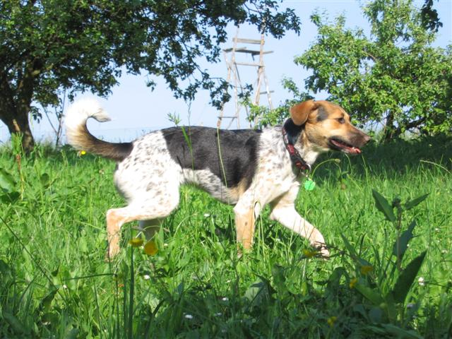
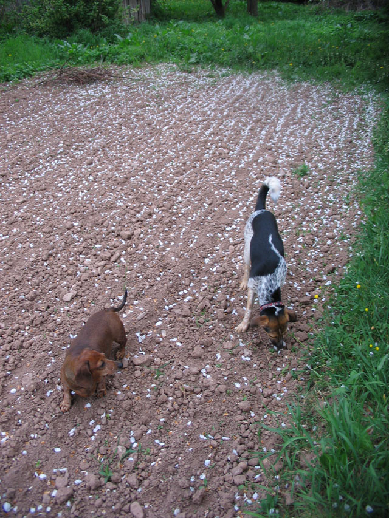
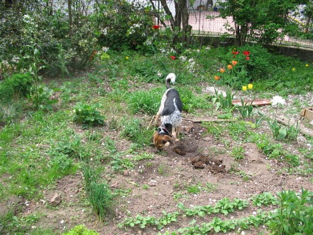
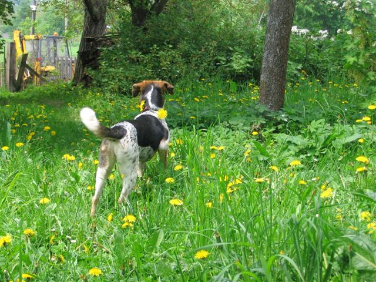
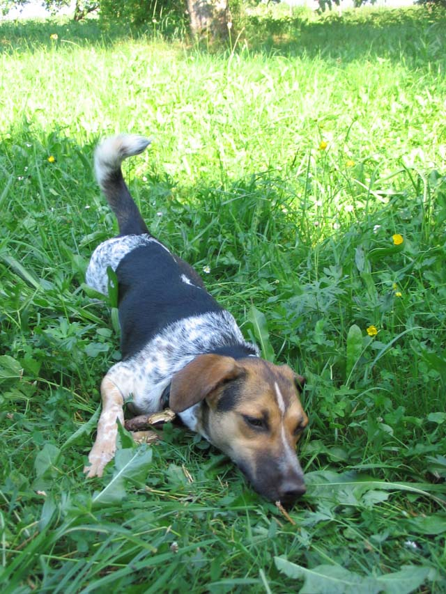
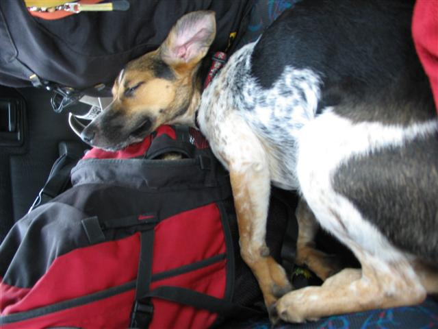
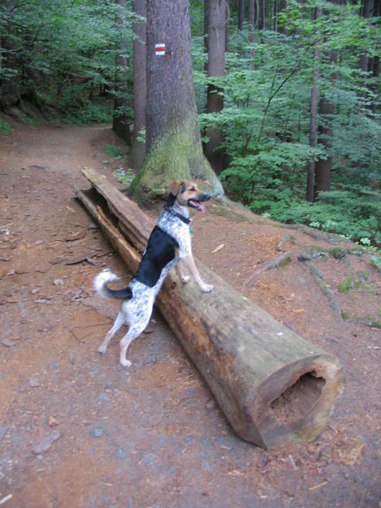

Navigace |
Červenec 2006: Díl 1. CestováníNela je vysloveně pes výletník, respektive výletnice.

Jakmile vidí, že jí balíme misky a věci, pobíhá okolo a očividně se těší na dobrodružství, na něž se jede. Většinou je to sice jen na jednu či druhou chatu, ale zatím jí to nepřipadá fádní, tím spíš, že u každé je velká zahrada, kde má co objevovat. Mezi Nelou a babiččinou postarší jezevčicí Dájou panuje to, co Goffman nazývá zdvořilá nevšímavost. Dája se díky nesocializaci za psa nejspíš nepovažuje, takže Nela kolem ní marně skáče a vyzývá jí ke hře.
 S Dájou na poli
 Mezi Neliny koníčky, někdy k naší malé radosti, patří práce na zahrádce
 V divočině má Nela mnoho příležitostí prokázat, jak ostražitý je hlídač
 Oddych v přírodě
 Nela při zpáteční cestě
Kromě toho občas samozřejmě vyrazíme jinam, třeba do lesa, což má tu výhodu, že Nela se drží přece jen o něco blíže, než v místech, kde to už zná. O minulém víkendu jsme nabrali podezření, že je zkřížená s kamzíkem, protože se neustále drápe na či ze skály, takže vyhlídkám se raději vyhýbáme.

|